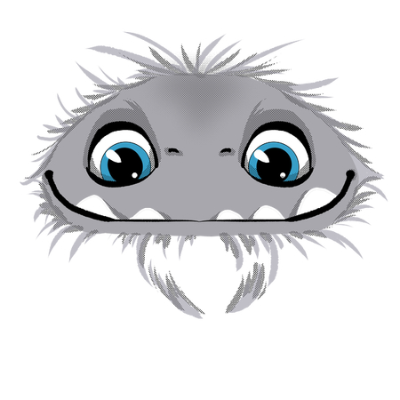
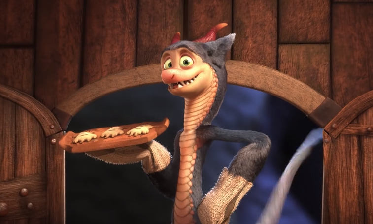

- 


- 
During the great quarantine of 2020, Mariel "Rawr" Hamson, came up with a unique idea that melded her love of cupcakes and monsters. She started baking for herself and her family and eventually moved on to taking online orders through Instagram and Facebook (all while properly socially distancing!).
As things took off, she expanded to multiple brick & mortar locations in the Portland area including:
Check out our map of locations to see which Little Monster is closest to you!
Each cupcake is lovingly made with a different monster peeking out from chocolate ganache frosting once you take a bite. Be on the lookout for the fan favorites: